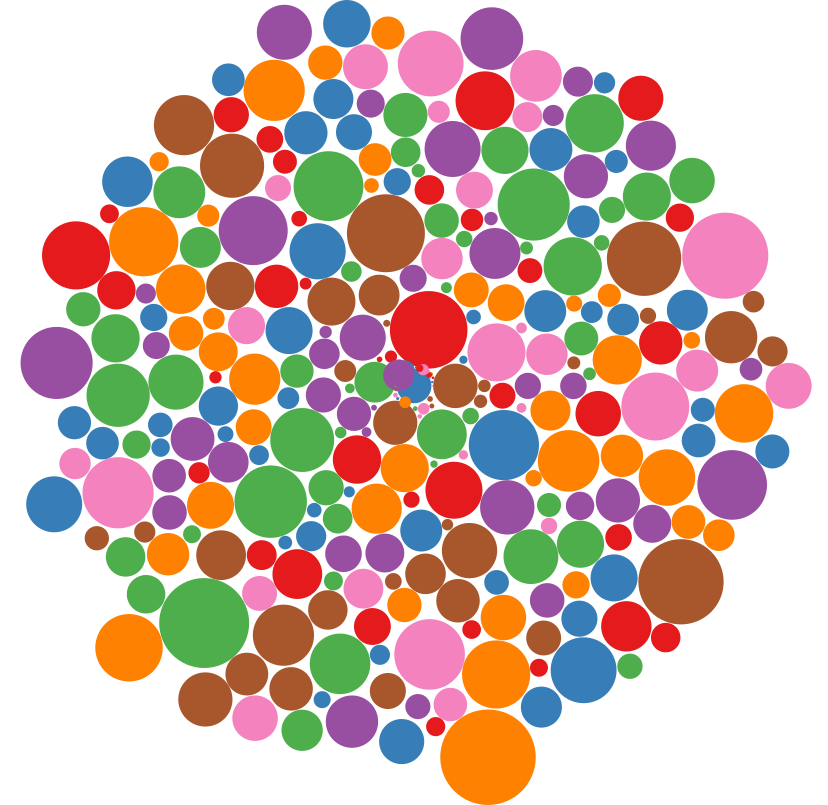
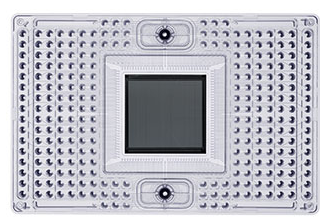
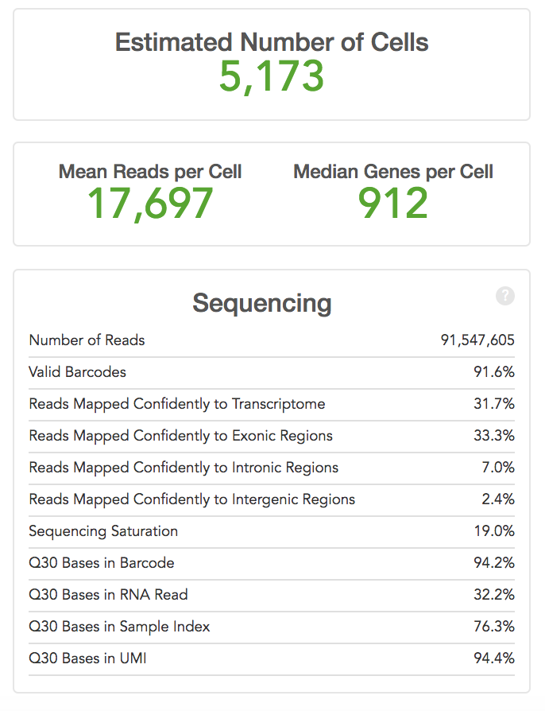

Interactive analysis and exploration of single cell rna-seq data
Mohan Bolisetty
Computational Biologist
Conventional profiling of tissues

But really, we know that there are many different cell types present by looking under a microscope
So that big cirle really is:

Deconvoluting tissues into single cells
Single Cell Transcriptomics
Defining the genes that specify cell types and states in a diverse array of tissues
Brief history of single cell profiling
It starts with picking cells into a tube

And making an RNA-seq library
It evolved into FACS sorting into plates
Using automated robots to make 10 - 100's of libraries
First generation of microfludics - Fluidigm C1
Capture up to 96 cells in a chamber
C1 Capture Chamber

Droplet based methods revolutionize single cell profiling
Plates -> Droplets
10's -> 1000's of cells
Capturing cells in 1nl oil droplet
10X Genomics
Scales to 48,000 cells per single 7 min Run

Experimental methods for scRNA-seq data:
- CEL-seq (1,2)
- Drop-seq
- InDrop
- MARS
- SCRB
- Smart-seq2
- SMARter
- 10X Chromium
- ...
Bioinformatics
Reads -> Matrix -> Figures -> Hypothesis
Reads -> Matrix: Pipelines
- FASTQ Generation
- Trimming
- Alignments
- QC metrics generation
- Feature quantitation (expression, peak calling ...)
- Visualization with browser tracks
Command line -> Interactive pipelines
Tools initially developed with command line interface, can now be launched with an interactive interface. Lots of different options with different advantages and disadvantages. Although, the learning curve is still present, not having to be well versed in the Linux (and cluster) environment opens up sequencing data analysis.
- Galaxy
- DNA Nexus
- Basespace
- And various other Portals
Additionally, container based pipelines increase reproducibility.
Once developed and tested this phase of analyis has to be run once for most of the samples.
Nearly every other analysis can start at a feature matrix
Matrix -> Figure

Single cell data is sparse - lots and lots of zeros

Computational approaches
The primary goal of every single cell experiment is to describe the heterogeneity of cell types present in the starting tissue population. This involves:
- Filtering low quality cells
- Filtering really sparse expressed genes
- Normalize gene expression
- Feature selection for clustering
- Dimensionality reduction
- Cluster identification
- Marker gene identification
- Cell type inference
80 different packages for this analysis and counting ...
https://github.com/seandavi/awesome-single-cell
Single cell data is rich in information. A single sample will have many cell types with many cell states.
Unsupervised approaches can only describe all this information to a certain extent. The biologist's knowledgebase and insight is essential to lead the computational scientists.
Case study #1 - Single cell RNA-seq of the mouse thalamus (Zhang lab)
Summary stats
Genes and Transcripts
Clusters
Clusters
Clusters in 3D
Markers
All of these are static plots, with low information content, when the data was high informational content.
We can also share excel sheets with relevant information but that is again non-visual and a static interpretation of the data.
Need to facilitate the scientists in each (or multiple) group to explore their data with their expertise.
CellView: A web application to visualize and explore single cell RNA-seq data
The aim of CellView is to provide you intutive access to your dataset:
- validate clustering - cell types
- explore gene expression patterns
- uncover subclusters in the data
- discover markers that define subclusters
- identify downstream algorithms and analysis
The inspiration: 732,000 and counting
There are only so many violin plots and heatmaps any computational scientist can make before ...
Inputs
Inputs into CellView are processed and clustered data based on the package of your choice.
Three matrices that contain the following information:
- log2cpm - Normalized expression matrix
- tsne.data - Visualization of clustering and cluster IDs
- featuredata - Dictionary to convert gene IDs to human understandable gene names
Inputs
Save the 3 dataframes into a single R object
log2cpm<-read.csv('Data/Expression.csv',row.names=1,stringsAsFactors = F, as.is=T, check.names=F)
featuredata<-read.csv('Databases/FeatureData.csv',row.names=1,stringsAsFactors = F, as.is=T,sep=',’)
tsne.data<-read.csv('Data/TNSE_dbscan.csv',row.names=1,stringsAsFactors = F,as.is=T)
save(log2cpm,featuredata,tsne.data,file=‘Filename.Rds’)
This single *.Rds file is uploaded to CellView
Lets explore the same Thalamus dataset using using CellView
We will begin by exploring some of the markers identified in this dataset
Apod,Lgals1,Col1a1,Vtn,Sparc,Junb,Klf2,Col4a1,Lum,Dcn,Igf2,Nupr1,Cxcl12,Ptn,Col1a2,S100a6,Ptgds,Igfbp2,Col3a1,Sepp1,Lgmn,Nfkbia,Hexb,Cd83,Ccl4,Ccl3,Ccl12,Ccl2,Junb,Ctsd,Ftl1,Tyrobp,C1qa,C1qc,C1qb,Ctss,Fcrls,P2ry12,Tmsb4x,Cst3,B2m,Fcer1g,Sst,Pvalb,Meg3,Gad1,Atp1b1,Hmgb2,H2afz,Cldn5,Sparc,Hba-a2,Hba-a1,Bsg,Hbb-bs,Hbb-bt,Igfbp7,Slc16a1,Itm2a,Rgs5,Aqp4,Pla2g7,Ckb,Id2,Aldoc,Clu,Ndrg2,Mt1,Mt3,Cpe,Fabp7,Gja1,Apoe,Ptn,Sparcl1,Hes5,Id3,Plpp3,Fabp5,Cst3,Slc1a2,Atp1a2,Dbi,Cldn5,Ctla2a,Sparc,Junb,Klf2,Bsg,Igfbp7,Slc16a1,Tmsb4x,Itm2a,Rgs5,Gap43,Meg3,Nap1l5,Pcp4,Cck,Mbp,Cnp,Mobp,Mag,Sirt2,Ugt8a,Cldn11,Plp1
Validation of a novel population of dendritic cells
Single-cell RNA-seq reveals new types of human blood dendritic cells, monocytes, and progenitors
Alexandra-Chloe Villani, Rahul Satija, et al.,
Science 21 Apr 2017
Clustering
Markers of DC5 - New population
- Identified 11 new markers that define this population
Can we find these in our data - PBMCs
- NK cells
- T cells
- B cells
- Myeloid cells
- T cells
- pDCs
- Doublets
- DCs
Lets explore this PBMC dataset using using CellView
Cluster6 - pdc markers
Cluster8 - Myeloid DC markers
We can identify CD1C, CD141 and AS DCs in PBMCs. AS DCs cluster away from the restof the myeloid DCs.
Acknowledgments
- Siva V
- Santhosh Sivajothi
- Lili Sun
- Paul Robson
- Joshy George
- KyungIn Kim
- Karolina Palucka
- Michael Stitzel
- Sandeep Namburi
- Aditya Kovuri
Feedback & Questions?
email me: mohan.bolisetty@jax.org
slides: mohanbolisetty.github.io/JAX-GenomicsResearchClub/